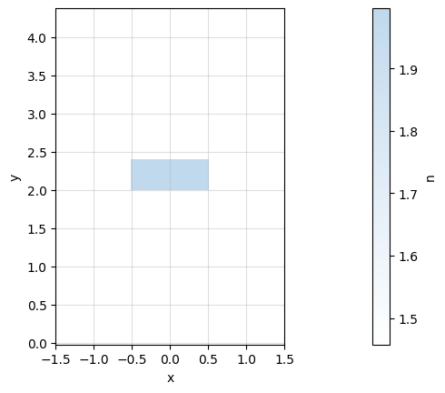

Tidy3D mode solver
Contents
Tidy3D mode solver#
Waveguides#
[1]:
import gdsfactory.simulation.gtidy3d as gt
nm = 1e-3
2022-10-04 15:39:19.894 | INFO | gdsfactory.config:<module>:52 - Load '/home/runner/work/gdsfactory/gdsfactory/gdsfactory' 5.37.0
2022-10-04 15:39:21.991 | INFO | gdsfactory.simulation.gtidy3d:<module>:54 - Tidy3d '1.6.3' installed at ['/usr/share/miniconda/envs/anaconda-client-env/lib/python3.9/site-packages/tidy3d']
[2]:
strip = gt.modes.Waveguide(
wavelength=1.55,
wg_width=0.5,
wg_thickness=0.22,
slab_thickness=0.0,
ncore=gt.modes.si,
nclad=gt.modes.sio2,
)
strip.plot_index()
[3]:
strip.plot_Ex(0) # TE
strip.plot_Ey(1) # TM
2022-10-04 15:39:22.281 | INFO | gdsfactory.simulation.gtidy3d.modes:compute_modes:374 - load /home/runner/work/gdsfactory/gdsfactory/gdslib/modes/534e038e.npz mode data from file cache.

[4]:
rib = gt.modes.Waveguide(
wavelength=1.55,
wg_width=0.5,
wg_thickness=0.22,
slab_thickness=0.15,
ncore=gt.modes.si,
nclad=gt.modes.sio2,
)
rib.plot_index()
[5]:
rib.plot_Ex(mode_index=0)
rib.plot_Ey(mode_index=0)
2022-10-04 15:39:23.257 | INFO | gdsfactory.simulation.gtidy3d.modes:compute_modes:374 - load /home/runner/work/gdsfactory/gdsfactory/gdslib/modes/bf8ecbd9.npz mode data from file cache.
[6]:
nitride = gt.modes.Waveguide(
wavelength=1.55,
wg_width=1.0,
wg_thickness=0.4,
slab_thickness=0.0,
ncore=gt.modes.sin,
nclad=gt.modes.sio2,
)
nitride.plot_index()
nitride.plot_Ex(0)
nitride.plot_Ey(0)

2022-10-04 15:39:24.075 | INFO | gdsfactory.simulation.gtidy3d.modes:compute_modes:374 - load /home/runner/work/gdsfactory/gdsfactory/gdslib/modes/7b92a943.npz mode data from file cache.
Sweep width#
You can sweep the waveguide width and compute the modes.
[7]:
df = gt.modes.sweep_width(
width1=200 * nm,
width2=1000 * nm,
steps=11,
wavelength=1.55,
wg_thickness=220 * nm,
slab_thickness=0 * nm,
ncore=gt.modes.si,
nclad=gt.modes.sio2,
)
gt.modes.plot_sweep_width(
width1=200 * nm,
width2=1000 * nm,
steps=11,
wavelength=1.55,
wg_thickness=220 * nm,
slab_thickness=0 * nm,
ncore=gt.modes.si,
nclad=gt.modes.sio2,
)
2022-10-04 15:39:24.741 | INFO | gdsfactory.simulation.gtidy3d.modes:compute_modes:374 - load /home/runner/work/gdsfactory/gdsfactory/gdslib/modes/cbc69aad.npz mode data from file cache.
2022-10-04 15:39:24.828 | INFO | gdsfactory.simulation.gtidy3d.modes:compute_modes:374 - load /home/runner/work/gdsfactory/gdsfactory/gdslib/modes/d88e531c.npz mode data from file cache.
2022-10-04 15:39:24.913 | INFO | gdsfactory.simulation.gtidy3d.modes:compute_modes:374 - load /home/runner/work/gdsfactory/gdsfactory/gdslib/modes/bfe27829.npz mode data from file cache.
2022-10-04 15:39:25.000 | INFO | gdsfactory.simulation.gtidy3d.modes:compute_modes:374 - load /home/runner/work/gdsfactory/gdsfactory/gdslib/modes/b604ff01.npz mode data from file cache.
2022-10-04 15:39:25.085 | INFO | gdsfactory.simulation.gtidy3d.modes:compute_modes:374 - load /home/runner/work/gdsfactory/gdsfactory/gdslib/modes/6453e781.npz mode data from file cache.
2022-10-04 15:39:25.173 | INFO | gdsfactory.simulation.gtidy3d.modes:compute_modes:374 - load /home/runner/work/gdsfactory/gdsfactory/gdslib/modes/701c0cac.npz mode data from file cache.
2022-10-04 15:39:25.259 | INFO | gdsfactory.simulation.gtidy3d.modes:compute_modes:374 - load /home/runner/work/gdsfactory/gdsfactory/gdslib/modes/5d807a39.npz mode data from file cache.
2022-10-04 15:39:25.344 | INFO | gdsfactory.simulation.gtidy3d.modes:compute_modes:374 - load /home/runner/work/gdsfactory/gdsfactory/gdslib/modes/36d898bf.npz mode data from file cache.
2022-10-04 15:39:25.428 | INFO | gdsfactory.simulation.gtidy3d.modes:compute_modes:374 - load /home/runner/work/gdsfactory/gdsfactory/gdslib/modes/af7059be.npz mode data from file cache.
2022-10-04 15:39:25.515 | INFO | gdsfactory.simulation.gtidy3d.modes:compute_modes:374 - load /home/runner/work/gdsfactory/gdsfactory/gdslib/modes/aa2134a5.npz mode data from file cache.
2022-10-04 15:39:25.604 | INFO | gdsfactory.simulation.gtidy3d.modes:compute_modes:374 - load /home/runner/work/gdsfactory/gdsfactory/gdslib/modes/3daa332f.npz mode data from file cache.
2022-10-04 15:39:25.692 | INFO | gdsfactory.simulation.gtidy3d.modes:compute_modes:374 - load /home/runner/work/gdsfactory/gdsfactory/gdslib/modes/cbc69aad.npz mode data from file cache.
2022-10-04 15:39:25.781 | INFO | gdsfactory.simulation.gtidy3d.modes:compute_modes:374 - load /home/runner/work/gdsfactory/gdsfactory/gdslib/modes/d88e531c.npz mode data from file cache.
2022-10-04 15:39:25.855 | INFO | gdsfactory.simulation.gtidy3d.modes:compute_modes:374 - load /home/runner/work/gdsfactory/gdsfactory/gdslib/modes/bfe27829.npz mode data from file cache.
2022-10-04 15:39:25.931 | INFO | gdsfactory.simulation.gtidy3d.modes:compute_modes:374 - load /home/runner/work/gdsfactory/gdsfactory/gdslib/modes/b604ff01.npz mode data from file cache.
2022-10-04 15:39:26.006 | INFO | gdsfactory.simulation.gtidy3d.modes:compute_modes:374 - load /home/runner/work/gdsfactory/gdsfactory/gdslib/modes/6453e781.npz mode data from file cache.
2022-10-04 15:39:26.084 | INFO | gdsfactory.simulation.gtidy3d.modes:compute_modes:374 - load /home/runner/work/gdsfactory/gdsfactory/gdslib/modes/701c0cac.npz mode data from file cache.
2022-10-04 15:39:26.160 | INFO | gdsfactory.simulation.gtidy3d.modes:compute_modes:374 - load /home/runner/work/gdsfactory/gdsfactory/gdslib/modes/5d807a39.npz mode data from file cache.
2022-10-04 15:39:26.238 | INFO | gdsfactory.simulation.gtidy3d.modes:compute_modes:374 - load /home/runner/work/gdsfactory/gdsfactory/gdslib/modes/36d898bf.npz mode data from file cache.
2022-10-04 15:39:26.313 | INFO | gdsfactory.simulation.gtidy3d.modes:compute_modes:374 - load /home/runner/work/gdsfactory/gdsfactory/gdslib/modes/af7059be.npz mode data from file cache.
2022-10-04 15:39:26.390 | INFO | gdsfactory.simulation.gtidy3d.modes:compute_modes:374 - load /home/runner/work/gdsfactory/gdsfactory/gdslib/modes/aa2134a5.npz mode data from file cache.
2022-10-04 15:39:26.466 | INFO | gdsfactory.simulation.gtidy3d.modes:compute_modes:374 - load /home/runner/work/gdsfactory/gdsfactory/gdslib/modes/3daa332f.npz mode data from file cache.
Group index#
You can also compute the group index for a waveguide.
[8]:
import gdsfactory.simulation.gtidy3d as gt
import numpy as np
import matplotlib.pyplot as plt
nm = 1e-3
ng = gt.modes.group_index(
wg_width=500 * nm,
wavelength=1.55,
wg_thickness=220 * nm,
slab_thickness=0 * nm,
ncore=gt.modes.si,
nclad=gt.modes.sio2,
)
print(ng)
2022-10-04 15:39:27.126 | INFO | gdsfactory.simulation.gtidy3d.modes:compute_modes:374 - load /home/runner/work/gdsfactory/gdsfactory/gdslib/modes/534e038e.npz mode data from file cache.
2022-10-04 15:39:27.209 | INFO | gdsfactory.simulation.gtidy3d.modes:compute_modes:374 - load /home/runner/work/gdsfactory/gdsfactory/gdslib/modes/9632c7cb.npz mode data from file cache.
2022-10-04 15:39:27.298 | INFO | gdsfactory.simulation.gtidy3d.modes:compute_modes:374 - load /home/runner/work/gdsfactory/gdsfactory/gdslib/modes/ee6112c0.npz mode data from file cache.
4.16956337679879
[9]:
wavelengths = np.arange(1500, 1601, 50) * 1e-3
wg_widths = np.arange(400, 601, 50) * 1e-3
wg_settings = dict(
wg_thickness=220 * nm,
slab_thickness=0 * nm,
ncore=gt.modes.si,
nclad=gt.modes.sio2,
)
for wg_width in wg_widths:
ng = [
gt.modes.group_index(wavelength=wavelength, wg_width=wg_width, **wg_settings)
for wavelength in wavelengths
]
plt.plot(wavelengths, ng, label=f"{wg_width*1e3}")
plt.legend()
plt.xlabel("Wavelength (um)")
plt.xlabel("ng")
2022-10-04 15:39:27.392 | INFO | gdsfactory.simulation.gtidy3d.modes:compute_modes:374 - load /home/runner/work/gdsfactory/gdsfactory/gdslib/modes/6f4d3cd7.npz mode data from file cache.
2022-10-04 15:39:27.474 | INFO | gdsfactory.simulation.gtidy3d.modes:compute_modes:374 - load /home/runner/work/gdsfactory/gdsfactory/gdslib/modes/bd4c384f.npz mode data from file cache.
2022-10-04 15:39:27.556 | INFO | gdsfactory.simulation.gtidy3d.modes:compute_modes:374 - load /home/runner/work/gdsfactory/gdsfactory/gdslib/modes/28144d52.npz mode data from file cache.
2022-10-04 15:39:27.643 | INFO | gdsfactory.simulation.gtidy3d.modes:compute_modes:374 - load /home/runner/work/gdsfactory/gdsfactory/gdslib/modes/17e81e4c.npz mode data from file cache.
2022-10-04 15:39:27.728 | INFO | gdsfactory.simulation.gtidy3d.modes:compute_modes:374 - load /home/runner/work/gdsfactory/gdsfactory/gdslib/modes/c2bb5e05.npz mode data from file cache.
2022-10-04 15:39:27.814 | INFO | gdsfactory.simulation.gtidy3d.modes:compute_modes:374 - load /home/runner/work/gdsfactory/gdsfactory/gdslib/modes/8be1b1b4.npz mode data from file cache.
2022-10-04 15:39:27.899 | INFO | gdsfactory.simulation.gtidy3d.modes:compute_modes:374 - load /home/runner/work/gdsfactory/gdsfactory/gdslib/modes/9a215eee.npz mode data from file cache.
2022-10-04 15:39:27.983 | INFO | gdsfactory.simulation.gtidy3d.modes:compute_modes:374 - load /home/runner/work/gdsfactory/gdsfactory/gdslib/modes/e4329efe.npz mode data from file cache.
2022-10-04 15:39:28.066 | INFO | gdsfactory.simulation.gtidy3d.modes:compute_modes:374 - load /home/runner/work/gdsfactory/gdsfactory/gdslib/modes/42f10c0c.npz mode data from file cache.
2022-10-04 15:39:28.165 | INFO | gdsfactory.simulation.gtidy3d.modes:compute_modes:374 - load /home/runner/work/gdsfactory/gdsfactory/gdslib/modes/13844833.npz mode data from file cache.
2022-10-04 15:39:28.249 | INFO | gdsfactory.simulation.gtidy3d.modes:compute_modes:374 - load /home/runner/work/gdsfactory/gdsfactory/gdslib/modes/4e8484ba.npz mode data from file cache.
2022-10-04 15:39:28.332 | INFO | gdsfactory.simulation.gtidy3d.modes:compute_modes:374 - load /home/runner/work/gdsfactory/gdsfactory/gdslib/modes/9429b40d.npz mode data from file cache.
2022-10-04 15:39:28.418 | INFO | gdsfactory.simulation.gtidy3d.modes:compute_modes:374 - load /home/runner/work/gdsfactory/gdsfactory/gdslib/modes/be624d43.npz mode data from file cache.
2022-10-04 15:39:28.503 | INFO | gdsfactory.simulation.gtidy3d.modes:compute_modes:374 - load /home/runner/work/gdsfactory/gdsfactory/gdslib/modes/cc1549de.npz mode data from file cache.
2022-10-04 15:39:28.590 | INFO | gdsfactory.simulation.gtidy3d.modes:compute_modes:374 - load /home/runner/work/gdsfactory/gdsfactory/gdslib/modes/79a1d52e.npz mode data from file cache.
2022-10-04 15:39:28.680 | INFO | gdsfactory.simulation.gtidy3d.modes:compute_modes:374 - load /home/runner/work/gdsfactory/gdsfactory/gdslib/modes/0046583f.npz mode data from file cache.
2022-10-04 15:39:28.763 | INFO | gdsfactory.simulation.gtidy3d.modes:compute_modes:374 - load /home/runner/work/gdsfactory/gdsfactory/gdslib/modes/a9d652ff.npz mode data from file cache.
2022-10-04 15:39:28.846 | INFO | gdsfactory.simulation.gtidy3d.modes:compute_modes:374 - load /home/runner/work/gdsfactory/gdsfactory/gdslib/modes/0df605d6.npz mode data from file cache.
2022-10-04 15:39:28.939 | INFO | gdsfactory.simulation.gtidy3d.modes:compute_modes:374 - load /home/runner/work/gdsfactory/gdsfactory/gdslib/modes/e386d28f.npz mode data from file cache.
2022-10-04 15:39:29.023 | INFO | gdsfactory.simulation.gtidy3d.modes:compute_modes:374 - load /home/runner/work/gdsfactory/gdsfactory/gdslib/modes/5bc85921.npz mode data from file cache.
2022-10-04 15:39:29.105 | INFO | gdsfactory.simulation.gtidy3d.modes:compute_modes:374 - load /home/runner/work/gdsfactory/gdsfactory/gdslib/modes/93f207d3.npz mode data from file cache.
2022-10-04 15:39:29.174 | INFO | gdsfactory.simulation.gtidy3d.modes:compute_modes:374 - load /home/runner/work/gdsfactory/gdsfactory/gdslib/modes/534e038e.npz mode data from file cache.
2022-10-04 15:39:29.240 | INFO | gdsfactory.simulation.gtidy3d.modes:compute_modes:374 - load /home/runner/work/gdsfactory/gdsfactory/gdslib/modes/9632c7cb.npz mode data from file cache.
2022-10-04 15:39:29.307 | INFO | gdsfactory.simulation.gtidy3d.modes:compute_modes:374 - load /home/runner/work/gdsfactory/gdsfactory/gdslib/modes/ee6112c0.npz mode data from file cache.
2022-10-04 15:39:29.392 | INFO | gdsfactory.simulation.gtidy3d.modes:compute_modes:374 - load /home/runner/work/gdsfactory/gdsfactory/gdslib/modes/730b850d.npz mode data from file cache.
2022-10-04 15:39:29.475 | INFO | gdsfactory.simulation.gtidy3d.modes:compute_modes:374 - load /home/runner/work/gdsfactory/gdsfactory/gdslib/modes/de3be3b3.npz mode data from file cache.
2022-10-04 15:39:29.558 | INFO | gdsfactory.simulation.gtidy3d.modes:compute_modes:374 - load /home/runner/work/gdsfactory/gdsfactory/gdslib/modes/c1d14568.npz mode data from file cache.
2022-10-04 15:39:29.645 | INFO | gdsfactory.simulation.gtidy3d.modes:compute_modes:374 - load /home/runner/work/gdsfactory/gdsfactory/gdslib/modes/78d2303d.npz mode data from file cache.
2022-10-04 15:39:29.729 | INFO | gdsfactory.simulation.gtidy3d.modes:compute_modes:374 - load /home/runner/work/gdsfactory/gdsfactory/gdslib/modes/aa0d1b7e.npz mode data from file cache.
2022-10-04 15:39:29.815 | INFO | gdsfactory.simulation.gtidy3d.modes:compute_modes:374 - load /home/runner/work/gdsfactory/gdsfactory/gdslib/modes/e7777089.npz mode data from file cache.
2022-10-04 15:39:29.908 | INFO | gdsfactory.simulation.gtidy3d.modes:compute_modes:374 - load /home/runner/work/gdsfactory/gdsfactory/gdslib/modes/4396a926.npz mode data from file cache.
2022-10-04 15:39:29.992 | INFO | gdsfactory.simulation.gtidy3d.modes:compute_modes:374 - load /home/runner/work/gdsfactory/gdsfactory/gdslib/modes/59d4d6e4.npz mode data from file cache.
2022-10-04 15:39:30.074 | INFO | gdsfactory.simulation.gtidy3d.modes:compute_modes:374 - load /home/runner/work/gdsfactory/gdsfactory/gdslib/modes/dbfb2068.npz mode data from file cache.
2022-10-04 15:39:30.159 | INFO | gdsfactory.simulation.gtidy3d.modes:compute_modes:374 - load /home/runner/work/gdsfactory/gdsfactory/gdslib/modes/7f20089a.npz mode data from file cache.
2022-10-04 15:39:30.244 | INFO | gdsfactory.simulation.gtidy3d.modes:compute_modes:374 - load /home/runner/work/gdsfactory/gdsfactory/gdslib/modes/f3af4332.npz mode data from file cache.
2022-10-04 15:39:30.326 | INFO | gdsfactory.simulation.gtidy3d.modes:compute_modes:374 - load /home/runner/work/gdsfactory/gdsfactory/gdslib/modes/31bfd079.npz mode data from file cache.
2022-10-04 15:39:30.413 | INFO | gdsfactory.simulation.gtidy3d.modes:compute_modes:374 - load /home/runner/work/gdsfactory/gdsfactory/gdslib/modes/2c3f68f8.npz mode data from file cache.
2022-10-04 15:39:30.496 | INFO | gdsfactory.simulation.gtidy3d.modes:compute_modes:374 - load /home/runner/work/gdsfactory/gdsfactory/gdslib/modes/aed7cd02.npz mode data from file cache.
2022-10-04 15:39:30.579 | INFO | gdsfactory.simulation.gtidy3d.modes:compute_modes:374 - load /home/runner/work/gdsfactory/gdsfactory/gdslib/modes/d0502b59.npz mode data from file cache.
2022-10-04 15:39:30.664 | INFO | gdsfactory.simulation.gtidy3d.modes:compute_modes:374 - load /home/runner/work/gdsfactory/gdsfactory/gdslib/modes/08714841.npz mode data from file cache.
2022-10-04 15:39:30.750 | INFO | gdsfactory.simulation.gtidy3d.modes:compute_modes:374 - load /home/runner/work/gdsfactory/gdsfactory/gdslib/modes/aa2338ad.npz mode data from file cache.
2022-10-04 15:39:30.834 | INFO | gdsfactory.simulation.gtidy3d.modes:compute_modes:374 - load /home/runner/work/gdsfactory/gdsfactory/gdslib/modes/7b03094d.npz mode data from file cache.
2022-10-04 15:39:30.924 | INFO | gdsfactory.simulation.gtidy3d.modes:compute_modes:374 - load /home/runner/work/gdsfactory/gdsfactory/gdslib/modes/bd533f85.npz mode data from file cache.
2022-10-04 15:39:31.007 | INFO | gdsfactory.simulation.gtidy3d.modes:compute_modes:374 - load /home/runner/work/gdsfactory/gdsfactory/gdslib/modes/fa9c95e6.npz mode data from file cache.
2022-10-04 15:39:31.090 | INFO | gdsfactory.simulation.gtidy3d.modes:compute_modes:374 - load /home/runner/work/gdsfactory/gdsfactory/gdslib/modes/23bfd82a.npz mode data from file cache.
Bend modes#
You can compute bend modes specifying the bend radius.
[10]:
strip_bend = gt.modes.Waveguide(
wavelength=1.55,
wg_width=0.5,
wg_thickness=0.22,
slab_thickness=0.0,
bend_radius=3,
ncore=gt.modes.si,
nclad=gt.modes.sio2,
)
[11]:
# lets plot the fundamental TE mode
strip_bend.plot_Ex(0)
strip_bend.plot_Ey(0)
2022-10-04 15:39:31.374 | INFO | gdsfactory.simulation.gtidy3d.modes:compute_modes:374 - load /home/runner/work/gdsfactory/gdsfactory/gdslib/modes/be958cac.npz mode data from file cache.
[12]:
# lets plot the fundamental TM mode
strip_bend.plot_Ex(1)
strip_bend.plot_Ey(1)

Bend loss#
You can also compute the losses coming from the mode mismatch from the bend into a straight waveguide. To compute the bend loss due to mode mismatch you can calculate the mode overlap of the straight mode and the bent mode. Because there are two mode mismatch interfaces the total loss due to mode mismatch will be squared (from bend to straight and from straight to bend).

[13]:
import gdsfactory.simulation.gtidy3d as gt
import matplotlib.pyplot as plt
r, integral = gt.modes.sweep_bend_loss(
wavelength=1.55,
wg_width=0.5,
wg_thickness=0.22,
slab_thickness=0.0,
ncore=gt.modes.si,
nclad=gt.modes.sio2,
bend_radius_min=2.0,
bend_radius_max=5,
steps=4,
mode_index=0,
)
plt.plot(r, integral, ".")
plt.xlabel("bend radius (um)")
plt.ylabel("Transmission")
plt.show()
2022-10-04 15:39:32.756 | INFO | gdsfactory.simulation.gtidy3d.modes:compute_modes:374 - load /home/runner/work/gdsfactory/gdsfactory/gdslib/modes/534e038e.npz mode data from file cache.
2022-10-04 15:39:32.838 | INFO | gdsfactory.simulation.gtidy3d.modes:compute_modes:374 - load /home/runner/work/gdsfactory/gdsfactory/gdslib/modes/cdf8a2c5.npz mode data from file cache.
2022-10-04 15:39:32.909 | INFO | gdsfactory.simulation.gtidy3d.modes:compute_modes:374 - load /home/runner/work/gdsfactory/gdsfactory/gdslib/modes/be958cac.npz mode data from file cache.
2022-10-04 15:39:33.010 | INFO | gdsfactory.simulation.gtidy3d.modes:compute_modes:374 - load /home/runner/work/gdsfactory/gdsfactory/gdslib/modes/8c18cbe1.npz mode data from file cache.
2022-10-04 15:39:33.099 | INFO | gdsfactory.simulation.gtidy3d.modes:compute_modes:374 - load /home/runner/work/gdsfactory/gdsfactory/gdslib/modes/ba280765.npz mode data from file cache.
Waveguide coupler#
You can also compute the modes of a waveguide coupler.
wg_width1 wg_width2
<-------> <------->
_______ | _______ __
| | | | | |
| | | | | |
| |_____| | | wg_thickness
|slab_thickness | |
|_____________________| |__
<----->
gap
[14]:
si = gt.modes.si
sio2 = gt.modes.sio2
c = gt.modes.WaveguideCoupler(
wavelength=1.55,
wg_width1=500 * nm,
wg_width2=500 * nm,
gap=200 * nm,
wg_thickness=220 * nm,
slab_thickness=100 * nm,
ncore=si,
nclad=sio2,
)
c.plot_index()
[15]:
c.plot_Ex(0)
2022-10-04 15:39:34.502 | INFO | gdsfactory.simulation.gtidy3d.modes:compute_modes:539 - write /home/runner/work/gdsfactory/gdsfactory/gdslib/modes/8bd9f6dc.npz mode data to file cache.
[16]:
c.plot_Ex(1)
[17]:
c = gt.modes.WaveguideCoupler(
wavelength=1.55,
wg_width1=500 * nm,
wg_width2=500 * nm,
gap=200 * nm,
wg_thickness=220 * nm,
slab_thickness=0 * nm,
ncore=si,
nclad=sio2,
)
c.plot_index()

[18]:
c.plot_Ex(0)
2022-10-04 15:39:36.390 | INFO | gdsfactory.simulation.gtidy3d.modes:compute_modes:539 - write /home/runner/work/gdsfactory/gdsfactory/gdslib/modes/371873ab.npz mode data to file cache.
[19]:
c.plot_Ex(1)
[20]:
import gdsfactory.simulation.gtidy3d as gt
import matplotlib.pyplot as plt
[21]:
nm = 1e-3
si = gt.modes.si
sio2 = gt.modes.sio2
c = gt.modes.WaveguideCoupler(
wavelength=1.55,
wg_width1=500 * nm,
wg_width2=500 * nm,
gap=200 * nm,
wg_thickness=220 * nm,
slab_thickness=0 * nm,
ncore=si,
nclad=sio2,
)
c.plot_index()
[22]:
gaps = [150, 200, 250, 300]
coupling_length = [
gt.modes.WaveguideCoupler(
wavelength=1.55,
wg_width1=500 * nm,
wg_width2=500 * nm,
gap=gap * nm,
wg_thickness=220 * nm,
slab_thickness=0 * nm,
ncore=si,
nclad=sio2,
).find_coupling(power_ratio=1)
for gap in gaps
]
2022-10-04 15:39:38.487 | INFO | gdsfactory.simulation.gtidy3d.modes:compute_modes:539 - write /home/runner/work/gdsfactory/gdsfactory/gdslib/modes/c48622a0.npz mode data to file cache.
2022-10-04 15:39:38.507 | INFO | gdsfactory.simulation.gtidy3d.modes:compute_modes:374 - load /home/runner/work/gdsfactory/gdsfactory/gdslib/modes/371873ab.npz mode data from file cache.
2022-10-04 15:39:39.582 | INFO | gdsfactory.simulation.gtidy3d.modes:compute_modes:539 - write /home/runner/work/gdsfactory/gdsfactory/gdslib/modes/cbb2ce76.npz mode data to file cache.
2022-10-04 15:39:40.382 | INFO | gdsfactory.simulation.gtidy3d.modes:compute_modes:539 - write /home/runner/work/gdsfactory/gdsfactory/gdslib/modes/f75b000a.npz mode data to file cache.
[23]:
plt.plot(gaps, coupling_length, ".")
plt.xlabel("gap (nm)")
plt.ylabel("100% coupling length (um)")